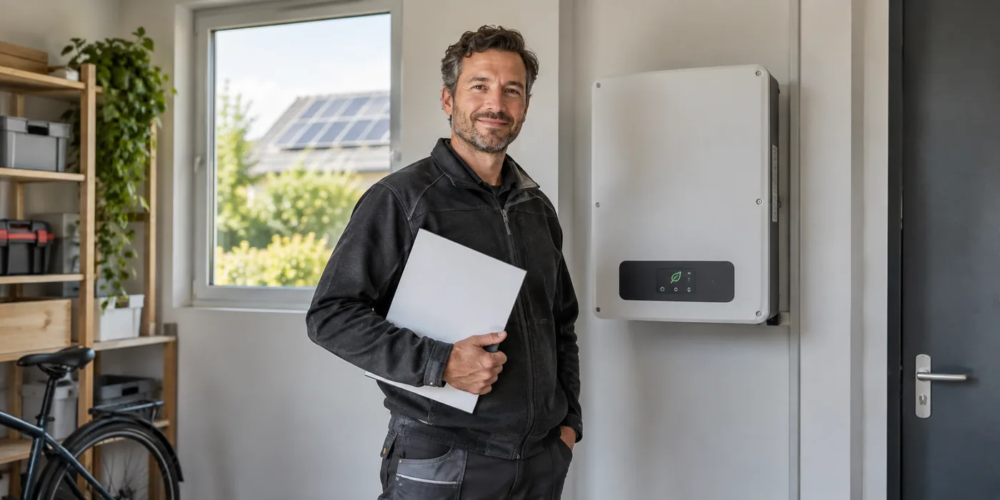

Maak een foto- en documentpakket
Noteer merk en type van panelen en omvormer, serienummers en de bestaande configuratie als die bekend is. Verzamel schema’s, keuringsdocumenten en beschikbare productgegevens. Maak alleen foto’s van toegankelijke informatie; open geen elektrische onderdelen. Een duidelijk pakket bespaart vooral heen-en-weercommunicatie tijdens de voorbereiding.
Bespreek vervanging en uitbreiding apart
Een vervanging hoeft niet automatisch een grotere installatie te worden. Vertel wel of je later opslag of extra panelen overweegt. Vraag de installateur de huidige opdracht en toekomstige opties afzonderlijk te beschrijven. Zo betaal je niet voor een vermeende voorbereiding waarvan je niet weet wat ze later mogelijk maakt.

Controleer de melding van de wijziging
Fluvius vermeldt wijzigingen zoals het vervangen van een omvormer bij de aan te melden aanpassingen. Vraag welke documenten en eventuele keuring voor jouw uitvoering nodig zijn en wie de melding doet. Bewaar na uitvoering het nieuwe schema en de identificatie van het toestel. Controleer ook dat de monitoring weer aan jouw account gekoppeld is.
Vraag wat de oude meetgegevens blijven betekenen
Een nieuwe omvormer kan een andere app, ander meetpunt of nieuwe totalen gebruiken. Laat oude gegevens exporteren als dat beschikbaar is en noteer de datum van vervanging. Vraag hoe de historische grafieken daarna gelezen moeten worden. Je wilt geen plotselinge sprong in een jaartotaal verwarren met extra productie. Bewaar ook wat met het oude toestel gebeurd is en welke onderdelen behouden bleven; die informatie is later nuttig bij servicevragen.
Defect, verouderd of een nieuwe wens?
Maak onderscheid tussen de aanleiding voor vervanging en de eigenschappen van het toekomstige systeem. Een storing vraagt een diagnose; een wens voor batterijopslag vraagt een andere ontwerpbeoordeling. Laat beide niet ongemerkt samenvallen in één oplossing. Vraag eerst wat aan het bestaande toestel is vastgesteld en welke mogelijkheden onderzocht zijn. Bespreek daarna of een andere configuratie beter past bij nieuwe plannen. Zo kun je noodzakelijke herstelkosten onderscheiden van een aanvullende investering. De snelst beschikbare omvormer is niet automatisch een geschikte keuze voor iedere bestaande installatie of voor alle mogelijke latere uitbreidingen.
Wat betekent compatibiliteit in je concrete dossier?
Vraag niet alleen of het nieuwe toestel geschikt is voor zonnepanelen. Laat de installateur de huidige paneelconfiguratie, aansluiting en relevante apparatuur meenemen. Bespreek eventuele ontbrekende documentatie vóór de bestelling. Een lijst met modelnummers helpt, maar de installateur moet beoordelen hoe de onderdelen daadwerkelijk samenwerken. Vraag waar hij op bestaande schema’s vertrouwt en wat hij ter plaatse controleert. Laat toekomstige batterijcompatibiliteit afzonderlijk vastleggen als die belangrijk is voor je keuze. Een algemene productterm kan immers niet aangeven welke specifieke apparatuur, software of extra werken later nog nodig zullen zijn.
Een wijziging hoort bij een bijgewerkt dossier
Fluvius vermeldt vervanging van onderdelen en wijziging van vermogen bij de aan te melden veranderingen. Vraag daarom hoe de administratieve opvolging georganiseerd wordt en welke stukken je ontvangt. Een bedrijf dat het toestel technisch vervangt, kan een andere taakverdeling voor de melding hanteren dan jij verwacht. Laat bevestigen wie verantwoordelijk is voor de concrete aanvraag en welke aanvullende beoordeling nodig is. Bewaar oude gegevens en de datum van de wijziging naast het nieuwe schema. Historische regelingen verdienen daarbij een afzonderlijke controle; veronderstel niet dat iedere wijziging zonder gevolgen voor een ouder dossier kan gebeuren.
Plan de periode waarin de installatie niet normaal werkt
Vraag wanneer de installatie buiten dienst gaat en welke werkzaamheden na de fysieke montage nog volgen. Bespreek een bereikbaar contactpersoon als de oplevering niet meteen afgerond kan worden. Houd herstelplanning en een eventuele uitbreiding uit elkaar, zodat de wachttijd voor extra onderdelen niet onbedoeld een noodzakelijke vervanging vertraagt. Laat ook weten of er andere werkzaamheden aan woning of elektrische installatie gepland zijn. Een korte planning met montage, controle, monitoring en administratie is doorgaans beter te volgen dan één beloofde einddatum zonder uitleg over de resterende stappen.
Wat controleer je na vervanging zelf?
Vraag een gebruikersuitleg van de nieuwe app en de meldingen die je moet doorgeven. Controleer of je toegang hebt tot je eigen gegevens en of de identificatie van het toestel bij de ontvangen documenten past. Ga niet zelf elektrische delen openen om te bewijzen dat het systeem goed aangesloten is. Bij een vraag kun je wel datum, melding en getoonde waarden verzamelen. Vergelijk de oude en nieuwe productiegrafiek alleen met begrip van de gebruikte meetdefinities. Een nieuw jaartotaal of een andere appweergave kan anders opgebouwd zijn, ook wanneer de fysieke panelen dezelfde zijn gebleven.
Praktische vergelijking
| Beslissing | Huidige situatie | Nieuwe situatie vastleggen |
|---|---|---|
| Aanleiding | Diagnose van storing | Herstel versus uitbreiding |
| Configuratie | Panelen en aansluiting | Compatibiliteitsbeoordeling |
| Administratie | Bestaand dossier | Schema’s en meldingen |
| Gebruik | Oude monitoring | Toegang en nieuwe meetdefinities |
Een praktisch voorbeeld
Je omvormer wordt vervangen door een ander type. De app werkt daarna, maar dat zegt nog niet dat het administratieve dossier is bijgewerkt. Vraag beide punten afzonderlijk na.
Illustratief scenario, geen klantcase.
Neem dit mee naar je gesprek
- Model- en serienummers
- Bestaande schema’s
- Huidige opdracht versus uitbreidingsplan
- Melding en nieuwe monitoring
Veelgestelde vraag
Kan ik zomaar een krachtigere omvormer kiezen?
Laat compatibiliteit, netaansluiting en gevolgen van de wijziging door de installateur beoordelen.
Bron en achtergrond
Fluvius: officiële of technische achtergrond bij dit onderwerp ↗
Geraadpleegd op 13 oktober 2026. De praktische checklist en het voorbeeld zijn redactionele uitwerkingen. Fabrikantinformatie geldt voor de beschreven producten; ze is geen algemene garantie voor andere systemen.
Wat betekent dit voor jouw woning?
Gebruik de calculator voor een eerste indicatie. Een vakman beoordeelt jouw situatie en bevestigt de uitvoering en definitieve prijs.
Bekijk de zonnepanelencalculator →